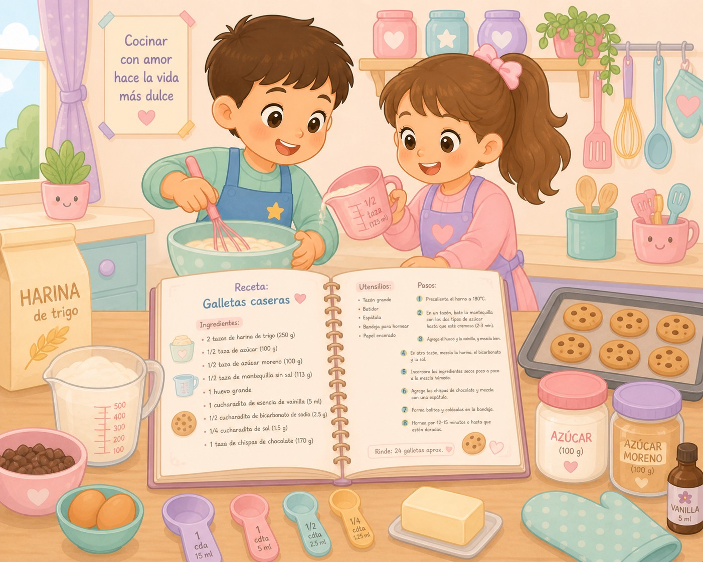

Con estas presentaciones (uno y dos), los alumnos podrán aprender qué es una receta y cómo realizarla aplicando los contenidos aprendidos en un contexto cotidiano. Utilizarán una plantilla de receta , (área de Lengua) con la posibilidad de crear una propia conservando los mismos apartados. Tendrán que grabar el proceso en vídeo, integrando así las tecnologías en el aprendizaje, lo que motiva al alumnado, permitiendo compartir sus recetas con el resto de compañeros; así como añadir un dibujo del resultado final (área de Plástica). Todo esto favorece un aprendizaje activo, motivador y significativo, porque conecta la teoría con la experiencia práctica.
{kind=link}
Presentación 2 creada por la autora con PowerPoint y la plantilla de la receta creada por la autora con Canva.

Imagen creada por la autora con DALL-E 3
Antes de empezar a cocinar, debéis buscar recetas saludables (área de Conocimiento del Medio) tras visualizar este genially. Cuando encontréis una que os guste, podéis hacerla en casa siguiendo los pasos, pero cambiando lo que queráis según vuestros gustos, los ingredientes que tengáis a mano, el número de comensales, ...